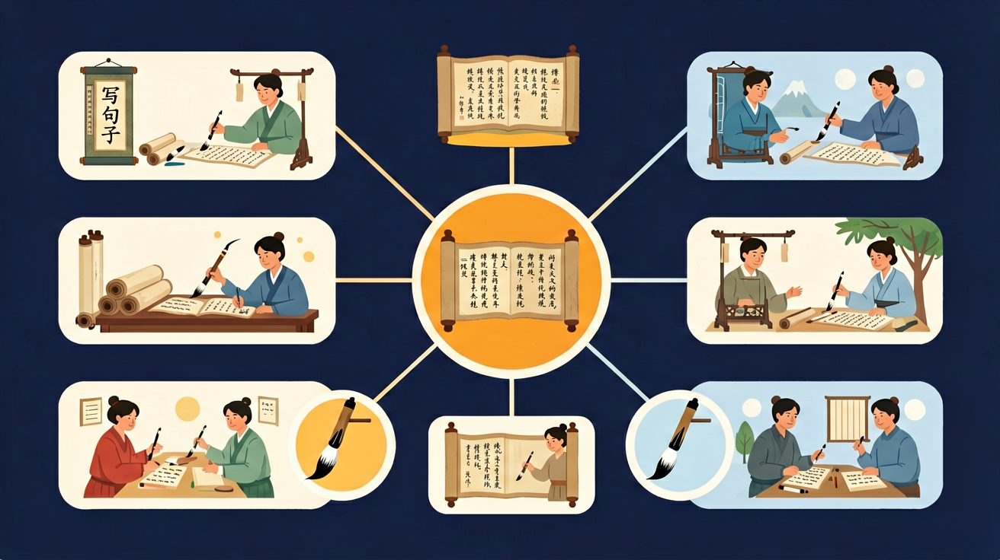

学会写完整的句子🌟 谁 + 干什么 🌟

🎯 能判断句子是否完整（主谓宾齐全）
🎯 能运用2种以上修饰手法扩写句子
🎯 能区分并运用陈述句/疑问句/感叹句
❓ 为什么我写的句子总是被老师说‘不通顺’？
❓ 怎么才能把句子写得像课文里一样优美？
❓ 每次写看图写话都凑不够字数怎么办？
学完这一课，这些问题你都能自信地回答。
下面哪个句子是完整的？
‘的、地、得’填空：小鸟（ ）歌唱
写好句子是作文的基础。一个完整的句子通常有明确的意思，成分齐全，语序合理。在完整通顺的基础上，再添加恰当修饰，句子就会更具体生动。
先保证“谁做什么”说清楚，再考虑加点时间、地点、怎样地等成分。写完朗读，发现别扭就调整语序或换词。避免句子残缺和成分杂糅。
常见误区：常见误区是缺主语或谓语，以及一句话里塞进太多互不相关的意思。应一句一意，先通后美。
写句子时最基本的要求是？
同一主干连续升级三次：通顺→具体→有修辞。对比三次结果，体会句子是怎样变好的。
And：学生知道句子由字词组成
But：不明白为什么‘吃苹果小明的’不是好句子
Therefore：建立‘主谓宾’基础概念
就像搭积木要有底座，每个句子都有‘谁+做什么’的骨架。比如‘小明（谁）吃（做）苹果（什么）’就是完整骨架。如果写成‘吃苹果小明的’，就像积木倒着搭会散架！数一数：正确句子要有至少1个主语和1个谓语。
🌍 妈妈让你‘把书包拿来’，如果只说‘拿来书包’，妈妈可能不知道谁该做这件事。主谓宾就像快递单：谁寄（小明），寄什么（苹果），寄给谁（妈妈）。
哪个句子骨架完整？
And：学生能写出主谓宾简单句
But：写的句子像‘小明吃苹果’这样干巴巴
Therefore：学习用形容词/副词打扮句子
好句子就像洋娃娃，光有骨架不够，还要穿漂亮衣服。形容词是衣服（什么样的），副词是发夹（怎么做的）。比如把‘小狗跑’变成‘毛茸茸的小狗飞快地跑’，加了2个形容词和1个副词，就像给娃娃穿上花裙子！注意：打扮时不能遮住骨架哦。
🌍 买冰淇淋时说‘要草莓味’比只说‘要冰淇淋’更可能得到想要的，就像‘红红的太阳’比‘太阳’更能让人想到傍晚。
哪个句子‘穿衣’正确？
And：学生会写单个完整句
But：写‘今天下雨。我没带伞。’这样断裂的句子
Therefore：学习用连接词合并句子
几个好朋友手拉手就是队伍，几个句子用连接词就能变长句。常见连接词像‘因为…所以’‘虽然…但是’是句子的小手。例如‘今天下雨’+‘我没带伞’用‘因为’连接，就变成‘因为今天下雨，所以我没带伞’，这样读起来更顺溜！试试看：用1个连接词能把2个短句变成1个长句。
🌍 就像用胶水把两张纸粘成贺卡，用‘而且’把‘我写完作业’和‘我看了动画片’粘成‘我写完作业而且看了动画片’。
哪组句子能用手拉手？
And：学生能写通顺长句
But：所有句子都像‘我先…然后…最后’这样单调
Therefore：学习变换句式让文章有趣
同样的意思就像魔术师帽子，能变出不同花样！‘小狗把骨头埋了’可以变成‘骨头被小狗埋了’，就像把帽子从红色变成蓝色。再比如‘3个小朋友分12块糖’可以写成‘12块糖被3个小朋友分’，数字不变但重点变了。记住：魔术不能把‘12块’变没哦！
🌍 就像妈妈问‘作业写完了吗？’也可以说‘写完作业了吗？’，意思一样但听起来不那么凶。
哪个是‘老师批改作业’的魔术版？
像拆积木一样找出句子的主谓宾
理解每个成分就像理解身体部位的作用
对比‘小狗跑’和‘黄茸茸的小狗欢快地奔跑’
用颜色标记不同成分（主语红、谓语蓝、宾语绿）
把扩句技巧用在日记里
关于写句子，正确的是：
观察校园里的一个场景，记录5个简单句，然后选择3个进行扩写
✅ 改成‘公园里有…’的句式
💡 受口语影响，缺少主语意识
✅ 动作前用‘地’，结果前用‘得’
💡 对结构助词语法功能不理解
口诀：谁干什么怎么样，扩句就像穿花衣
类比：造句像做汉堡，主语谓语是面包，修饰词就是中间的蔬菜肉饼
先独立作答，再点选项查看对错与错因。
下面哪个句子写得最具体生动？
要把'小狗跑'扩写成更生动的句子，不应该添加：
下面哪个时间词最适合填入句子：'____，妈妈在厨房里做饭'？
把句子补充完整：'____的小猫____在____晒太阳'
答案：示例：毛茸茸的|懒洋洋地|窗台上
添加形容词和地点使句子生动
用'放学后'开头写一个完整句子：____
答案：示例：放学后，我和同学一起打扫教室
需要包含人物和具体活动